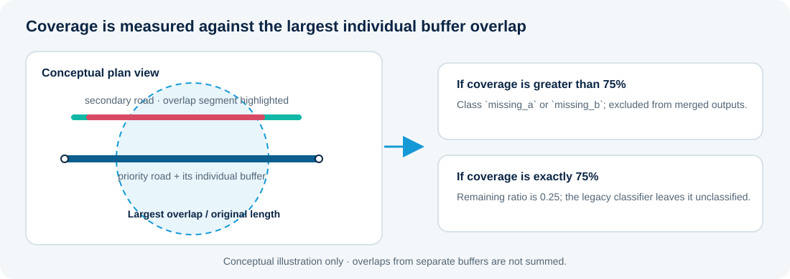

Toolkit capabilities
Tools for a more deliberate road network integration workflow
Screen candidate roads, control geometry processing, and keep intermediate outputs available for review.
Coverage classification
Measure the largest overlap with an individual priority-road buffer and assign the legacy Missing_Class categories.
Three integration methods
Choose between Direct Merge, Clip + Snap, and Targeted Snap for different geometry outcomes.
Input validation and CRS handling
Validate line and polygon inputs, require a projected analysis CRS, and convert metre-based settings to map units.
Background processing
Run geometry operations as a QGIS background task with progress reporting, logging and cancellation checkpoints.
Reviewable diagnostics
Optionally retain coverage layers, priority buffers, method-specific intermediate layers and a timestamped log.
Multiple output formats
Export to GeoPackage, Shapefile or File Geodatabase when the installed GDAL driver supports creation.
Coverage logic
Understand which secondary roads are eligible
Coverage classification is based on the largest overlap with one individual priority buffer. It does not sum overlap lengths across separate buffers.

| Remaining-length ratio | Class | Included in merged output |
|---|---|---|
| 0 to 0.01 inclusive | missing_a | No |
| Greater than 0.01 and less than 0.25 | missing_b | No |
| Exactly 0.25 | Unclassified | No |
| Greater than 0.25 through 0.50 | missing_4 | Yes |
| Greater than 0.50 through 0.75 | missing_3 | Yes |
| Greater than 0.75 and less than 1 | missing_2 | Yes |
| Exactly 1 | missing_1 | Yes |
The exact 0.25 remaining-ratio boundary is unclassified for legacy compatibility. In Clip + Snap and Targeted Snap, trimming is a later operation against the dissolved priority-buffer mask.